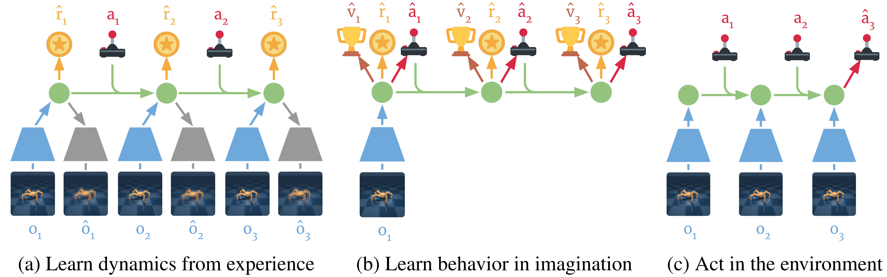
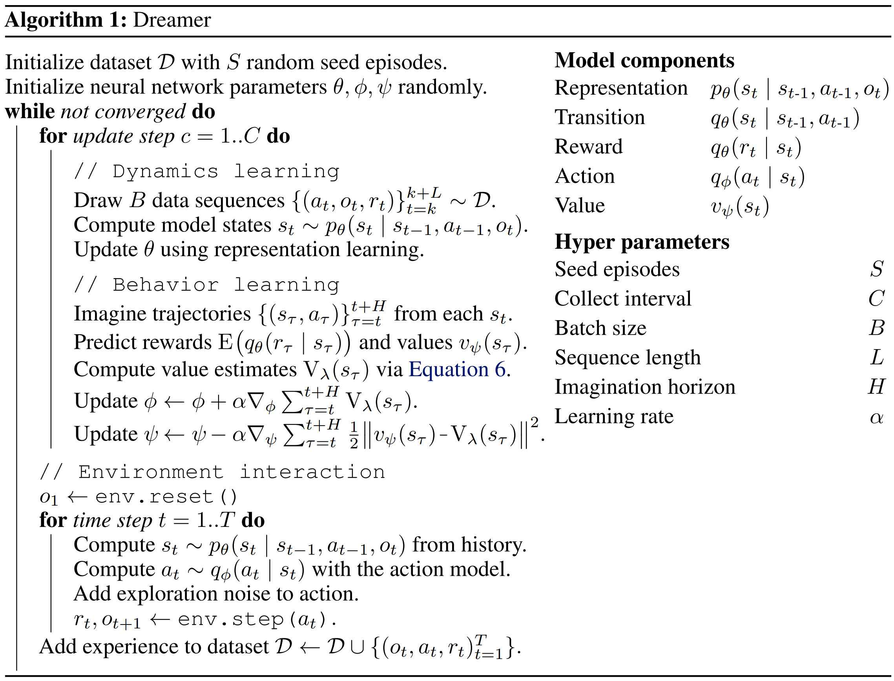
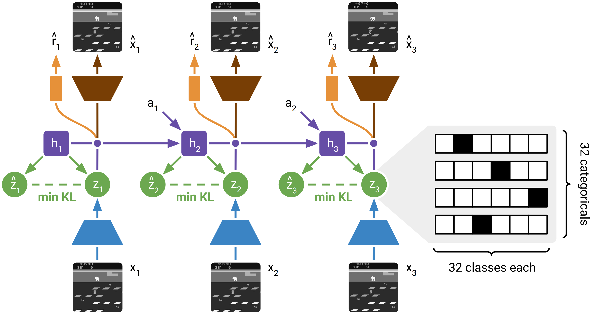
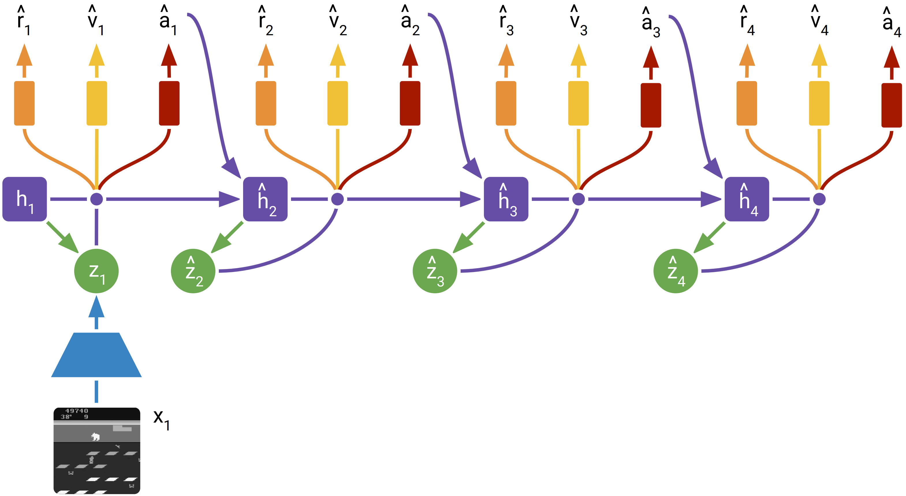
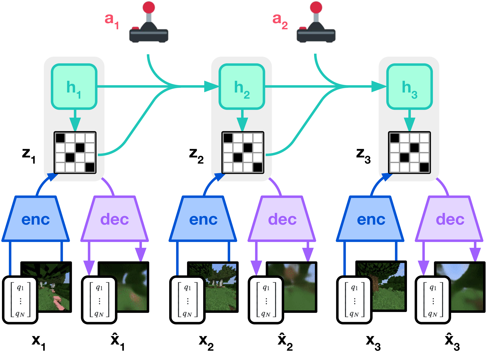
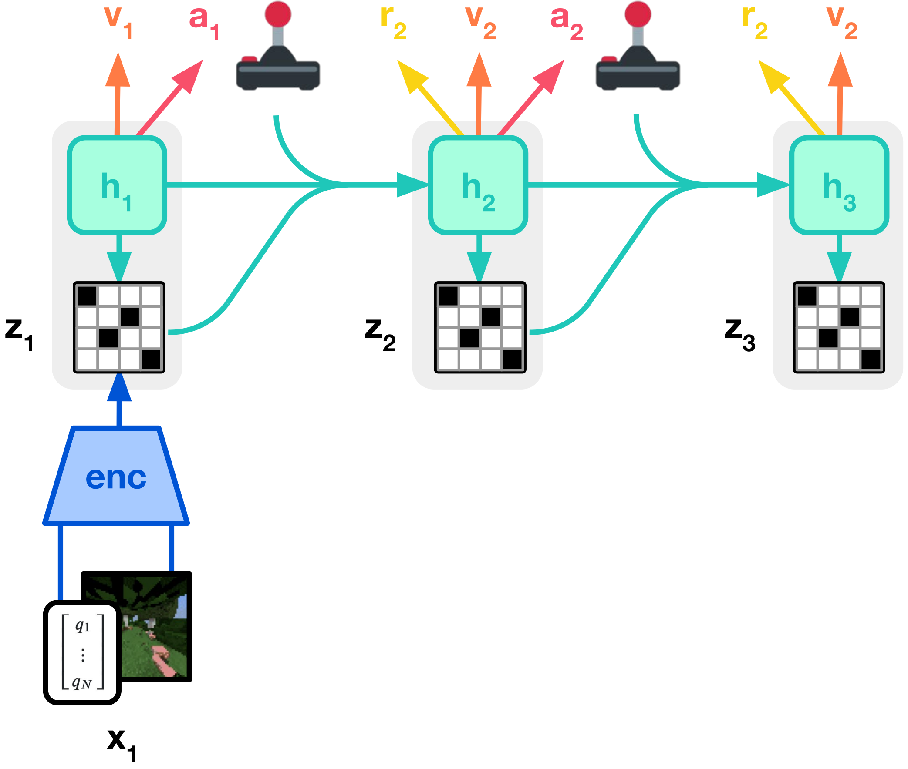
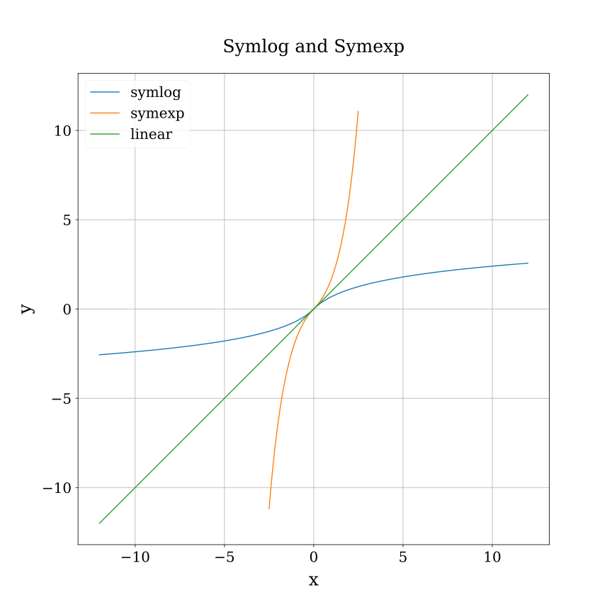

Dreamer Series
Dreamer v1

World Model Learning
Model
Type
Definition
Distribution Family
Transition
Generation
s t ∼ p θ ( s t ∣ s t − 1 , a t − 1 ) s_{t} \sim p_{\theta}(s_{t} \mid s_{t - 1},\ a_{t - 1}) s t ∼ p θ ( s t ∣ s t − 1 , a t − 1 ) N ( μ θ ( s t − 1 , a t − 1 ) , d i a g θ ( s t − 1 , a t − 1 ) ) \mathcal{N} \Big( \mu_{\theta}(s_{t - 1},\ a_{t - 1}),\ \mathrm{diag}_{\theta}(s_{t - 1},\ a_{t - 1}) \Big) N ( μ θ ( s t − 1 , a t − 1 ) , d i a g θ ( s t − 1 , a t − 1 ) )
Observation
Generation
o t ∼ p θ ( o t ∣ s t ) o_{t} \sim p_{\theta}(o_{t} \mid s_{t}) o t ∼ p θ ( o t ∣ s t ) N ( μ θ ( s t ) , I ) \mathcal{N} \Big( \mu_{\theta}(s_{t}),\ \boldsymbol{I} \Big) N ( μ θ ( s t ) , I )
Reward
Generation
r t ∼ p θ ( r t ∣ s t ) r_{t} \sim p_{\theta}(r_{t} \mid s_{t}) r t ∼ p θ ( r t ∣ s t ) N ( μ θ ( s t ) , 1 ) \mathcal{N} \Big( \mu_{\theta}(s_{t}),\ 1 \Big) N ( μ θ ( s t ) , 1 )
Posterior
Inference
s t ∼ q θ ( s t ∣ s t − 1 , a t − 1 , o t ) s_{t} \sim q_{\theta}(s_{t} \mid s_{t - 1},\ a_{t - 1},\ o_{t}) s t ∼ q θ ( s t ∣ s t − 1 , a t − 1 , o t ) N ( μ θ ( s t − 1 , a t − 1 , o t ) , d i a g θ ( s t − 1 , a t − 1 , o t ) ) \mathcal{N} \Big( \mu_{\theta}(s_{t - 1},\ a_{t - 1},\ o_{t}),\ \mathrm{diag}_{\theta}(s_{t - 1},\ a_{t - 1},\ o_{t}) \Big) N ( μ θ ( s t − 1 , a t − 1 , o t ) , d i a g θ ( s t − 1 , a t − 1 , o t ) )
reward prediction
Simply learning to predict future rewards given actions and past observation
reconstruction
Learns world model by reconstructing observations via variational information bottleneck (VIB) objective
max θ J R E C = E s 1 : T [ ∑ t ( ln p θ ( o t ∣ s t ) ⏟ J O t + ln p θ ( r t ∣ s t ) ⏟ J R t − β D K L ( q θ ( s t ∣ s t − 1 , a t − 1 , o t ) ∥ p θ ( s t ∣ s t − 1 , a t − 1 ) ⏟ J D t ) ] \max_{\theta} \mathcal{J}_{\mathrm{REC}} = \mathcal{E}_{s_{1:\mathrm{T}}} \left[ \sum_{t} \Big( \underset{\mathcal{J}_{\mathrm{O}}^{t}}{\underbrace{\ln p_{\theta}(o_{t} \mid s_{t})}} + \underset{\mathcal{J}_{\mathrm{R}}^{t}}{\underbrace{\ln p_{\theta}(r_{t} \mid s_{t})}} - \underset{\mathcal{J}_{\mathrm{D}}^{t}}{\underbrace{\beta D_{\mathrm{KL}} \Big( q_{\theta}(s_{t} \mid s_{t - 1},\ a_{t - 1},\ o_{t})\ \Big\|\ p_{\theta}(s_{t} \mid s_{t - 1},\ a_{t - 1})}} \Big) \right]
θ max J R E C = E s 1 : T ⎣ ⎢ ⎢ ⎢ ⎡ t ∑ ( J O t ln p θ ( o t ∣ s t ) + J R t ln p θ ( r t ∣ s t ) − J D t β D K L ( q θ ( s t ∣ s t − 1 , a t − 1 , o t ) ∥ ∥ ∥ ∥ p θ ( s t ∣ s t − 1 , a t − 1 ) ) ⎦ ⎥ ⎥ ⎥ ⎤
contrastive estimation
Predicting observation can require high model capacity, it’s also feasible to predict state from observation. The world model and an alternative state model q θ ( s t ∣ o t ) q_{\theta}(s_{t} \mid o_{t}) q θ ( s t ∣ o t )
max θ J N C E = E s 1 : T [ ∑ t ( J S t + J R t + J D t ) ] J S t = ln q θ ( s t ∣ o t ) − ln ( ∑ o ′ q θ ( s t ∣ o ′ ) ) \max_{\theta} \mathcal{J}_{\mathrm{NCE}} = \mathcal{E}_{s_{1:\mathrm{T}}} \left[ \sum_{t} \Big( \mathcal{J}_{\mathrm{S}}^{t} + \mathcal{J}_{\mathrm{R}}^{t} + \mathcal{J}_{\mathrm{D}}^{t} \Big) \right] \quad \mathcal{J}_{\mathrm{S}}^{t} = \ln q_{\theta}(s_{t} \mid o_{t}) - \ln \left( \sum_{o'} q_{\theta}(s_{t} \mid o') \right)
θ max J N C E = E s 1 : T [ t ∑ ( J S t + J R t + J D t ) ] J S t = ln q θ ( s t ∣ o t ) − ln ( o ′ ∑ q θ ( s t ∣ o ′ ) )
Behavior Learning
Dreamer uses TD(λ) method to train critic network based on imagined trajectories { s τ , a τ , r τ } τ = t t + H \{ s_{\tau},\ a_{\tau},\ r_{\tau} \}_{\tau = t}^{t + H} { s τ , a τ , r τ } τ = t t + H
V τ k = ∑ n = 0 k − 1 γ n r τ + n + γ k v ψ ( s τ + k ) V τ λ = ( 1 − λ ) ∑ k = 1 t + H − τ − 1 λ k − 1 V τ k + λ t + H − τ − 1 V τ t + H − τ V_{\tau}^{k} = \sum_{n = 0}^{k - 1} \gamma^{n} r_{\tau + n} + \gamma^{k} v_{\psi}(s_{\tau + k}) \qquad V_{\tau}^{\lambda} = (1 - \lambda) \sum_{k = 1}^{t + H - \tau - 1} \lambda^{k - 1} V_{\tau}^{k} + \lambda^{t + H - \tau - 1} V_{\tau}^{t + H - \tau}
V τ k = n = 0 ∑ k − 1 γ n r τ + n + γ k v ψ ( s τ + k ) V τ λ = ( 1 − λ ) k = 1 ∑ t + H − τ − 1 λ k − 1 V τ k + λ t + H − τ − 1 V τ t + H − τ
Use the square of TD error as the learning objective of critic network v ψ ( s ) v_{\psi}(s) v ψ ( s )
min ψ E q θ , q ϕ ( 1 2 ∑ τ = t t + H [ v ψ ( s τ ) − V τ λ ] 2 ) \min_{\psi} \mathcal{E}_{q_{\theta},\ q_{\phi}} \left( \frac{1}{2} \sum_{\tau = t}^{t + H} \Big[ v_{\psi}(s_{\tau}) - V_{\tau}^{\lambda} \Big]^{2} \right)
ψ min E q θ , q ϕ ( 2 1 τ = t ∑ t + H [ v ψ ( s τ ) − V τ λ ] 2 )
The action model outputs a tanh-transformed Gaussian, allowing for reparameterized sampling
a τ = tanh ( μ ϕ ( s τ ) + σ ϕ ( s τ ) ϵ ) ϵ ∼ N ( 0 , I ) a_{\tau} = \tanh \Big( \mu_{\phi}(s_{\tau}) + \sigma_{\phi}(s_{\tau}) \epsilon \Big) \quad \epsilon \sim \mathcal{N}(\boldsymbol{0},\ \boldsymbol{I})
a τ = tanh ( μ ϕ ( s τ ) + σ ϕ ( s τ ) ϵ ) ϵ ∼ N ( 0 , I )
Use the TD target as the learning objective of actor network q ϕ ( a ∣ s ) q_{\phi}(a \mid s) q ϕ ( a ∣ s )
max ϕ E q θ , q ϕ ( ∑ τ = t t + H V τ λ ) ⇒ min ϕ E q θ , q ϕ ( − ∑ τ = t t + H V τ λ ) \max_{\phi} \mathcal{E}_{q_{\theta},\ q_{\phi}} \left( \sum_{\tau = t}^{t + H} V_{\tau}^{\lambda} \right) \Rightarrow \min_{\phi} \mathcal{E}_{q_{\theta},\ q_{\phi}} \left( -\sum_{\tau = t}^{t + H} V_{\tau}^{\lambda} \right)
ϕ max E q θ , q ϕ ( τ = t ∑ t + H V τ λ ) ⇒ ϕ min E q θ , q ϕ ( − τ = t ∑ t + H V τ λ )
Methods
Feature
Difference in Dreamer
Actor-Critic
directly calculates the policy gradient
backpropagates policy gradient
DDPG
backpropagates through value model but
leverages gradients backpropagated from

Dreamer v2
World Model Learning
Component
Type
Definition
Distribution Family
Recurrent Model
Generation
h t = f ϕ ( h t − 1 , s t − 1 , a t − 1 ) h_{t} = f_{\phi}(h_{t - 1},\ s_{t - 1},\ a_{t - 1}) h t = f ϕ ( h t − 1 , s t − 1 , a t − 1 ) Deterministic
Representation Model
Inference
s t ∼ q ϕ ( s t ∣ h t , o t ) s_{t} \sim q_{\phi}(s_{t} \mid h_{t},\ o_{t}) s t ∼ q ϕ ( s t ∣ h t , o t ) Categorical
Transition Predictor
Generation
s t ∼ p ϕ ( s t ∣ h t ) s_{t} \sim p_{\phi}(s_{t} \mid h_{t}) s t ∼ p ϕ ( s t ∣ h t ) Categorical
Image Predictor
Generation
o t ∼ p ϕ ( o t ∣ h t , s t ) o_{t} \sim p_{\phi}(o_{t} \mid h_{t},\ s_{t}) o t ∼ p ϕ ( o t ∣ h t , s t ) N ( μ ϕ ( h t , s t ) , I ) \mathcal{N} \Big( \mu_{\phi}(h_{t},\ s_{t}),\ \boldsymbol{I} \Big) N ( μ ϕ ( h t , s t ) , I )
Reward Predictor
Generation
r t ∼ p ϕ ( r t ∣ h t , s t ) r_{t} \sim p_{\phi}(r_{t} \mid h_{t},\ s_{t}) r t ∼ p ϕ ( r t ∣ h t , s t ) N ( μ ϕ ( h t , s t ) , 1 ) \mathcal{N} \Big( \mu_{\phi}(h_{t},\ s_{t}),\ 1 \Big) N ( μ ϕ ( h t , s t ) , 1 )
Discount Predictor
Generation
γ t ∼ p ϕ ( γ t ∣ h t , s t ) \gamma_{t} \sim p_{\phi}(\gamma_{t} \mid h_{t},\ s_{t}) γ t ∼ p ϕ ( γ t ∣ h t , s t ) Bernoulli
The probabilistic model of stochastic state s t s_{t} s t
1 2 3 sample = one_hot(draw(logits))
The discounted factor is set to a fixed hyperparameter within an episode and zero for terminal time steps, which reveals the end of episode during behavior learning.

All components of the world model are optimized jointly by maximizing the ELBO
J ( ϕ ) = E s 1 : T [ ∑ t = 1 T ln p ϕ ( o t ∣ h t , s t ) + ln p ϕ ( r t ∣ h t , s t ) + ln p ϕ ( γ t ∣ h t , s t ) − β D K L ( q ϕ ( ⋅ ∣ h t , o t ) ∥ p ϕ ( ⋅ ∣ h t ) ) ] \mathcal{J}(\phi) = \mathcal{E}_{s_{1:\mathrm{T}}} \left[ \sum_{t = 1}^{\mathrm{T}} \ln p_{\phi}(o_{t} \mid h_{t},\ s_{t}) + \ln p_{\phi}(r_{t} \mid h_{t},\ s_{t}) + \ln p_{\phi}(\gamma^{t} \mid h_{t},\ s_{t}) - \beta D_{\mathrm{KL}} \Big( q_{\phi}(\cdot \mid h_{t},\ o_{t})\ \|\ p_{\phi}(\cdot \mid h_{t}) \Big) \right]
J ( ϕ ) = E s 1 : T [ t = 1 ∑ T ln p ϕ ( o t ∣ h t , s t ) + ln p ϕ ( r t ∣ h t , s t ) + ln p ϕ ( γ t ∣ h t , s t ) − β D K L ( q ϕ ( ⋅ ∣ h t , o t ) ∥ p ϕ ( ⋅ ∣ h t ) ) ]
Learning the transition function (prior) is more difficult, to avoid regularizing the representations toward a poorly trained prior, the KL loss is minimized faster w.r.t. the prior than the representations by using different learning rates
1 kl_loss = α * kl(stop_grad(posterior), prior) + (1 - α) * kl(posterior, stop_grad(prior))
Behavior Learning
Similar to Dreamer-v1, the critic v ξ ( s ) v_{\xi}(s) v ξ ( s ) p ψ ( a t ∣ s t ) p_{\psi}(a_{t} \mid s_{t}) p ψ ( a t ∣ s t ) ρ = 1 \rho = 1 ρ = 1 ρ = 0 \rho = 0 ρ = 0
J ( ψ ) = E s 1 : T , a 1 : T [ ∑ t = 1 T − 1 ρ ln p ψ ( a t ∣ s t ) sg ( V t λ − v ξ ( s t ) ) + ( 1 − ρ ) V t λ + η H ( p ψ ∣ s t ) ] \mathcal{J}(\psi) = \mathcal{E}_{s_{1:\mathrm{T}}, a_{1:\mathrm{T}}} \left[ \sum_{t = 1}^{\mathrm{T} - 1} \rho \ln p_{\psi}(a_{t} \mid s_{t}) \operatorname{sg} \Big( V_{t}^{\lambda} - v_{\xi}(s_{t}) \Big) + (1 - \rho) V_{t}^{\lambda} + \eta \mathcal{H}(p_{\psi} \mid s_{t}) \right]
J ( ψ ) = E s 1 : T , a 1 : T [ t = 1 ∑ T − 1 ρ ln p ψ ( a t ∣ s t ) s g ( V t λ − v ξ ( s t ) ) + ( 1 − ρ ) V t λ + η H ( p ψ ∣ s t ) ]
where
V t λ = r t + γ t { ( 1 − λ ) v ξ ( s t + 1 ) + λ V t + 1 λ t < T v ξ ( s T ) t = T V_{t}^{\lambda} = r_{t} + \gamma_{t} \left\{\begin{matrix}
(1 - \lambda) v_{\xi}(s_{t + 1}) + \lambda V_{t + 1}^{\lambda} & t < \mathrm{T} \\[5mm]
v_{\xi}(s_{\mathrm{T}}) & t = \mathrm{T}
\end{matrix}\right.
V t λ = r t + γ t ⎩ ⎪ ⎨ ⎪ ⎧ ( 1 − λ ) v ξ ( s t + 1 ) + λ V t + 1 λ v ξ ( s T ) t < T t = T

Dreamer-v3
World Model Learning
Component
Type
Definition
Distribution Family
Sequence Model
Generation
h t = f ϕ ( h t − 1 , s t − 1 , a t − 1 ) h_{t} = f_{\phi}(h_{t - 1},\ s_{t - 1},\ a_{t - 1}) h t = f ϕ ( h t − 1 , s t − 1 , a t − 1 ) Deterministic
Encoder
Inference
s t ∼ q ϕ ( s t ∣ h t , o t ) s_{t} \sim q_{\phi}(s_{t} \mid h_{t},\ o_{t}) s t ∼ q ϕ ( s t ∣ h t , o t ) Categorical
Dynamics Predictor
Generation
s t ∼ p ϕ ( s t ∣ h t ) s_{t} \sim p_{\phi}(s_{t} \mid h_{t}) s t ∼ p ϕ ( s t ∣ h t ) Categorical
Decoder
Generation
o t ∼ p ϕ ( o t ∣ h t , s t ) o_{t} \sim p_{\phi}(o_{t} \mid h_{t},\ s_{t}) o t ∼ p ϕ ( o t ∣ h t , s t )
Reward Predictor
Generation
r t ∼ p ϕ ( r t ∣ h t , s t ) r_{t} \sim p_{\phi}(r_{t} \mid h_{t},\ s_{t}) r t ∼ p ϕ ( r t ∣ h t , s t )
Continue Predictor
Generation
c t ∼ p ϕ ( c t ∣ h t , s t ) c_{t} \sim p_{\phi}(c_{t} \mid h_{t},\ s_{t}) c t ∼ p ϕ ( c t ∣ h t , s t ) Bernoulli

The world model parameters ϕ \phi ϕ
L ( ϕ ) = E s 1 : T [ ∑ t = 1 T β p r e d L p r e d ( ϕ ) + β d y n L d y n ( ϕ ) + β r e p L r e p ( ϕ ) ] \mathcal{L}(\phi) = \mathcal{E}_{s_{1:\mathrm{T}}} \left[ \sum_{t = 1}^{\mathrm{T}} \beta_{\mathrm{pred}} \mathcal{L}_{\mathrm{pred}}(\phi) + \beta_{\mathrm{dyn}} \mathcal{L}_{\mathrm{dyn}}(\phi) + \beta_{\mathrm{rep}} \mathcal{L}_{\mathrm{rep}}(\phi) \right]
L ( ϕ ) = E s 1 : T [ t = 1 ∑ T β p r e d L p r e d ( ϕ ) + β d y n L d y n ( ϕ ) + β r e p L r e p ( ϕ ) ]
where
L p r e d ( ϕ ) = − ln p ϕ ( o t ∣ h t , s t ) − ln p ϕ ( r t ∣ h t , s t ) − ln p ϕ ( c t ∣ h t , s t ) L d y n ( ϕ ) = max [ 1 , D K L ( sg ( q ϕ ( s t ∣ h t , o t ) ) ∥ p ϕ ( s t ∣ h t ) ) ] L r e p ( ϕ ) = max [ 1 , D K L ( q ϕ ( s t ∣ h t , o t ) ∥ sg ( p ϕ ( s t ∣ h t ) ) ) ] \begin{gathered}
\mathcal{L}_{\mathrm{pred}}(\phi) = -\ln p_{\phi}(o_{t} \mid h_{t},\ s_{t}) - \ln p_{\phi}(r_{t} \mid h_{t},\ s_{t}) - \ln p_{\phi}(c_{t} \mid h_{t},\ s_{t}) \\[5mm]
\mathcal{L}_{\mathrm{dyn}}(\phi) = \max \left[ 1,\ D_{\mathrm{KL}} \Big( \operatorname{sg}(q_{\phi}(s_{t} \mid h_{t},\ o_{t}))\ \|\ p_{\phi}(s_{t} \mid h_{t}) \Big) \right] \\[5mm]
\mathcal{L}_{\mathrm{rep}}(\phi) = \max \left[ 1,\ D_{\mathrm{KL}} \Big( q_{\phi}(s_{t} \mid h_{t},\ o_{t})\ \|\ \operatorname{sg}(p_{\phi}(s_{t} \mid h_{t})) \Big) \right]
\end{gathered}
L p r e d ( ϕ ) = − ln p ϕ ( o t ∣ h t , s t ) − ln p ϕ ( r t ∣ h t , s t ) − ln p ϕ ( c t ∣ h t , s t ) L d y n ( ϕ ) = max [ 1 , D K L ( s g ( q ϕ ( s t ∣ h t , o t ) ) ∥ p ϕ ( s t ∣ h t ) ) ] L r e p ( ϕ ) = max [ 1 , D K L ( q ϕ ( s t ∣ h t , o t ) ∥ s g ( p ϕ ( s t ∣ h t ) ) ) ]
To avoid a degenerate solution where the dynamics are trivial to predict but fail to contain enough information about the inputs, Dreamer v3 employs free bits by clipping the dynamics and representation losses.
Behavior Learning
use the REINFORCE gradient for actor network π θ ( a t ∣ s t ) \pi_{\theta}(a_{t} \mid s_{t}) π θ ( a t ∣ s t )
L ( θ ) = ∑ t = 1 T sg [ R t λ − v ψ ( s t ) max ( 1 , S ) ] ln π θ ( a t ∣ s t ) + η H ( π θ ∣ s t ) \mathcal{L}(\theta) = \sum_{t = 1}^{\mathrm{T}} \operatorname{sg} \left[ \frac{R_{t}^{\lambda} - v_{\psi}(s_{t})}{\max(1,\ S)} \right] \ln \pi_{\theta}(a_{t} \mid s_{t}) + \eta \mathcal{H}(\pi_{\theta} \mid s_{t})
L ( θ ) = t = 1 ∑ T s g [ max ( 1 , S ) R t λ − v ψ ( s t ) ] ln π θ ( a t ∣ s t ) + η H ( π θ ∣ s t )
To be robust to outliers, the return is normalized by exponential moving average smooth of the range from the 5th to the 95th return percentil over the return batch, which is clipped by 1
S = EMA [ Δ t = Per ( R t λ , 95 ) − Per ( R t λ , 5 ) , 0.99 ] = 0.99 Δ t + 0.01 Δ t − 1 S = \operatorname{EMA} \Big[ \Delta_{t} = \operatorname{Per}(R_{t}^{\lambda},\ 95) - \operatorname{Per}(R_{t}^{\lambda},\ 5),\ 0.99 \Big] = 0.99 \Delta_{t} + 0.01 \Delta_{t - 1}
S = E M A [ Δ t = P e r ( R t λ , 9 5 ) − P e r ( R t λ , 5 ) , 0 . 9 9 ] = 0 . 9 9 Δ t + 0 . 0 1 Δ t − 1

The critic network v ψ ( R t ∣ s t ) v_{\psi}(R_{t} \mid s_{t}) v ψ ( R t ∣ s t )
L ( ψ ) = − ∑ t = 1 T ln p ψ ( R t λ ∣ s t ) R t λ = r t + γ c t { ( 1 − λ ) E v ψ ( ⋅ ∣ s t + 1 ) + λ R t + 1 λ t < T E v ψ ( ⋅ ∣ s T ) t = T \mathcal{L}(\psi) = -\sum_{t = 1}^{\mathrm{T}} \ln p_{\psi}(R_{t}^{\lambda} \mid s_{t}) \quad R_{t}^{\lambda} = r_{t} + \gamma c_{t} \left\{ \begin{matrix}
(1 - \lambda) \mathcal{E} v_{\psi}(\cdot \mid s_{t + 1}) + \lambda R_{t + 1}^{\lambda} & t < \mathrm{T} \\[5mm]
\mathcal{E} v_{\psi}(\cdot \mid s_{\mathrm{T}}) & t = \mathrm{T}
\end{matrix} \right.
L ( ψ ) = − t = 1 ∑ T ln p ψ ( R t λ ∣ s t ) R t λ = r t + γ c t ⎩ ⎪ ⎨ ⎪ ⎧ ( 1 − λ ) E v ψ ( ⋅ ∣ s t + 1 ) + λ R t + 1 λ E v ψ ( ⋅ ∣ s T ) t < T t = T
Robust Predictions
It is challenging to reconstruct input and predict reward and returns whose scale can vary across domains. The symplog is used to compress the magnitudes of both positive and negative values
symlog ( x ) = sign ( x ) ln ( ∣ x ∣ + 1 ) symexp ( y ) = sign ( y ) ( exp ( ∣ y ∣ ) − 1 ) \operatorname{symlog}(x) = \operatorname{sign}(x) \ln (|x| + 1) \quad \operatorname{symexp}(y) = \operatorname{sign}(y) (\exp(|y|) - 1)
s y m l o g ( x ) = s i g n ( x ) ln ( ∣ x ∣ + 1 ) s y m e x p ( y ) = s i g n ( y ) ( exp ( ∣ y ∣ ) − 1 )

The distribution of potentially stochastic targets can be modeled with exponentially spaced bins B B B
y = softmax ( f ( x ) ) ⊤ B = softmax ( f ( x ) ) ⊤ symexp ( [ − 20 , ⋯ , + 20 ] ) y = \operatorname{softmax}(f(x))^{\top} B = \operatorname{softmax}(f(x))^{\top} \operatorname{symexp}([-20,\ \cdots,\ +20])
y = s o f t m a x ( f ( x ) ) ⊤ B = s o f t m a x ( f ( x ) ) ⊤ s y m e x p ( [ − 2 0 , ⋯ , + 2 0 ] )
The ground truth vector can be written as the following twohot encoding procedure
twohot ( y ) i = { ∣ B k + 1 − y ∣ / ∣ B k + 1 − B k ∣ i = k ∣ B k − y ∣ / ∣ B k + 1 − B k ∣ i = k + 1 0 e l s e k = ∑ i = 1 ∣ B ∣ I ( b i < x ) \operatorname{twohot}(y)_{i} = \left\{ \begin{matrix}
|B_{k + 1} - y| \Big/ |B_{k + 1} - B_{k}| & i = k \\[5mm]
|B_{k} - y| \Big/ |B_{k + 1} - B_{k}| & i = k + 1 \\[5mm]
0 & \mathrm{else}
\end{matrix} \right. \qquad k = \sum_{i = 1}^{|B|} \mathbb{I}(b_{i} < x)
t w o h o t ( y ) i = ⎩ ⎪ ⎪ ⎪ ⎪ ⎪ ⎪ ⎨ ⎪ ⎪ ⎪ ⎪ ⎪ ⎪ ⎧ ∣ B k + 1 − y ∣ / ∣ B k + 1 − B k ∣ ∣ B k − y ∣ / ∣ B k + 1 − B k ∣ 0 i = k i = k + 1 e l s e k = i = 1 ∑ ∣ B ∣ I ( b i < x )
The error between prediction and ground truth can be written as cross entropy loss
L ( θ ) = − twohot ( y ) ⊤ log softmax ( f θ ( x ) ) \mathcal{L}(\theta) = -\operatorname{twohot}(y)^{\top} \log \operatorname{softmax}(f_{\theta}(x))
L ( θ ) = − t w o h o t ( y ) ⊤ log s o f t m a x ( f θ ( x ) )